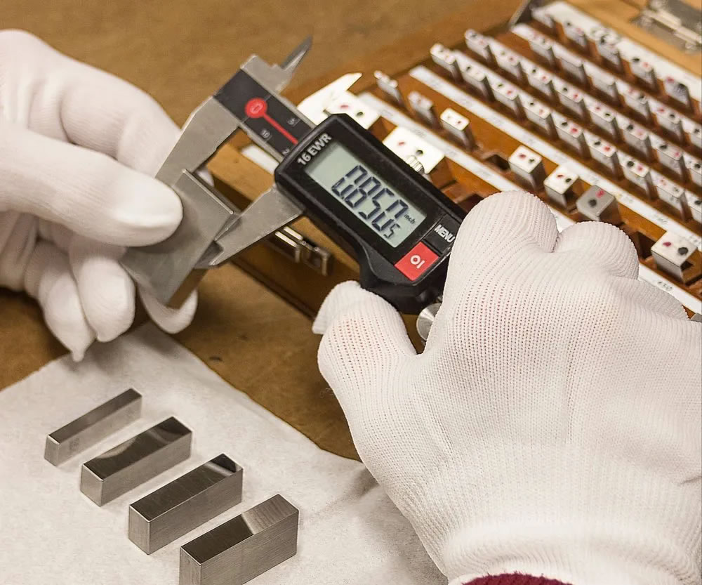

Our goods and services have assisted businesses in improving their production processes to meet their high quality standards. Our agency section maintains a database of reputable manufacturers from whom we source the wide variety of testing equipment from around India. All testing equipment is serviced, repaired, maintained, and calibrated to the necessary standards by the servicing and calibration section. With the help of a group of professionals, this division makes every effort to guarantee that no testing equipment in any laboratory experiences any downtime.
